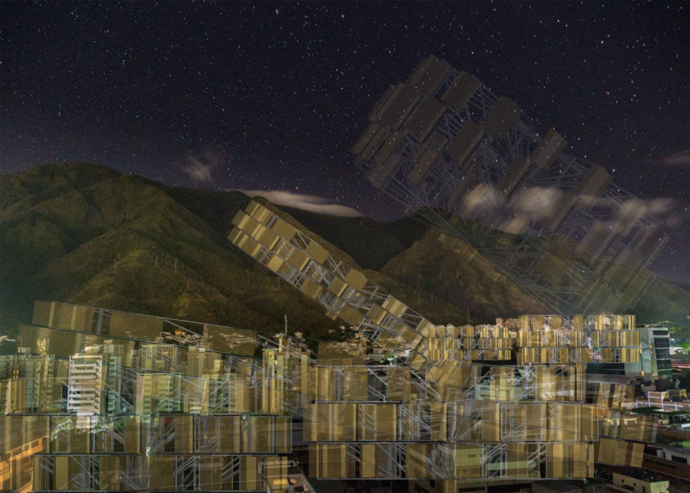
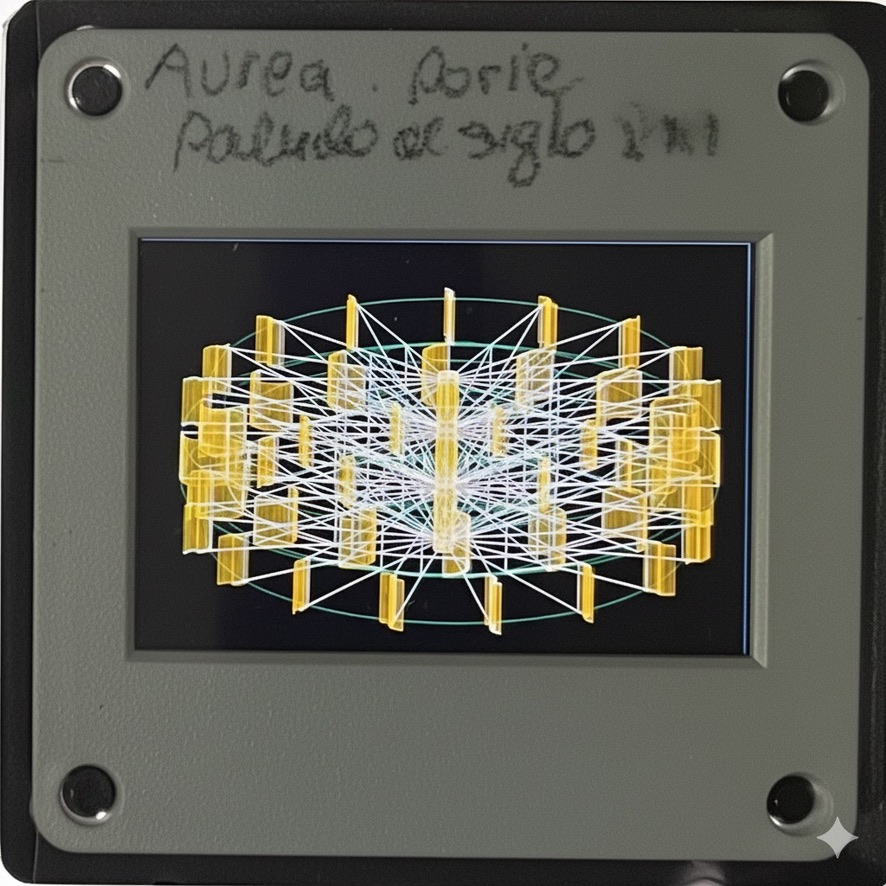
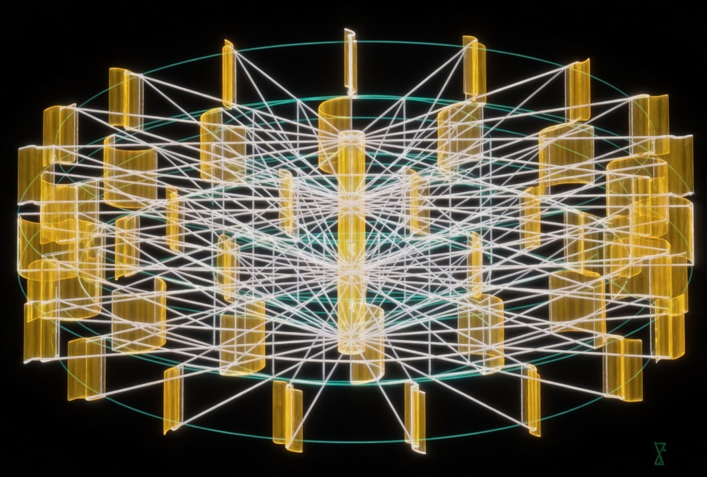
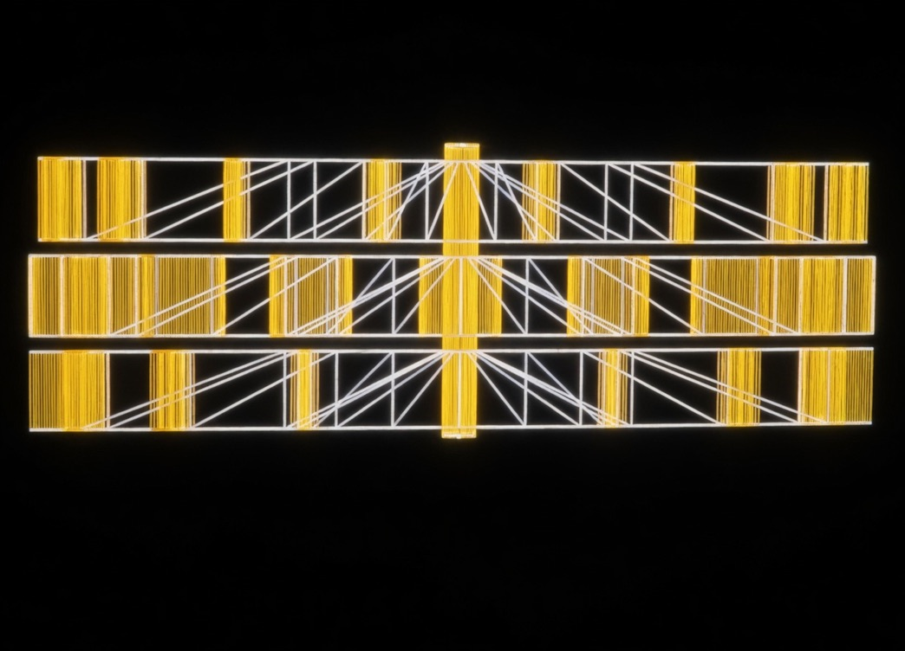
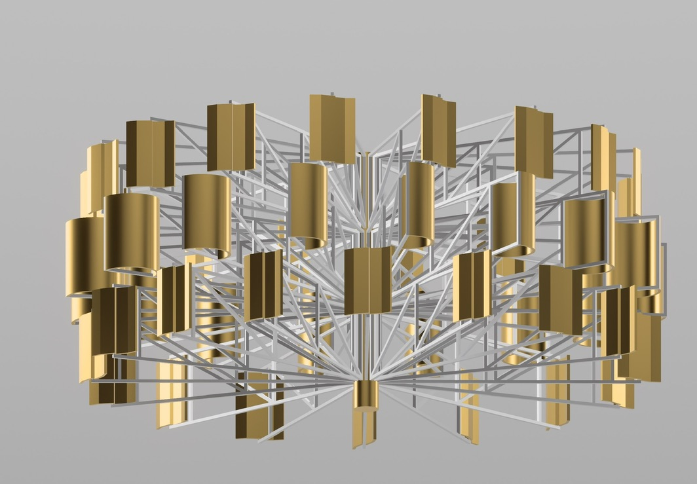
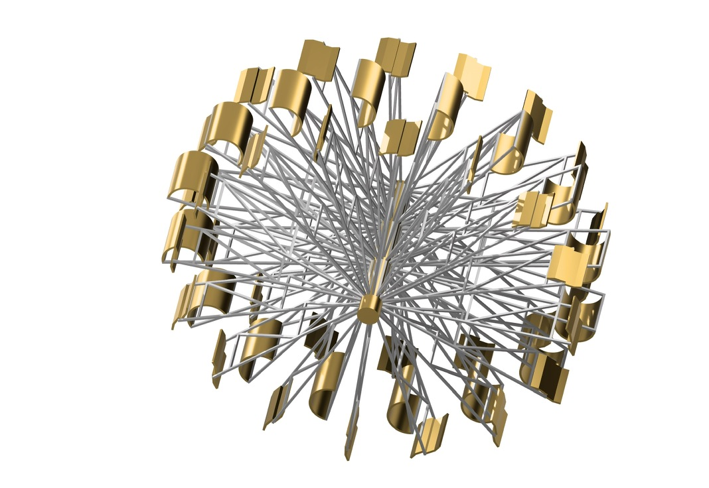
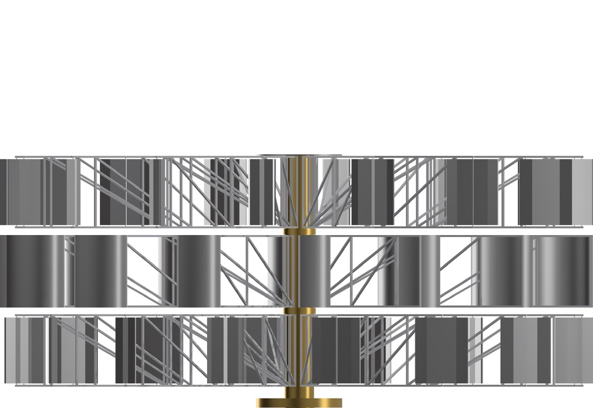
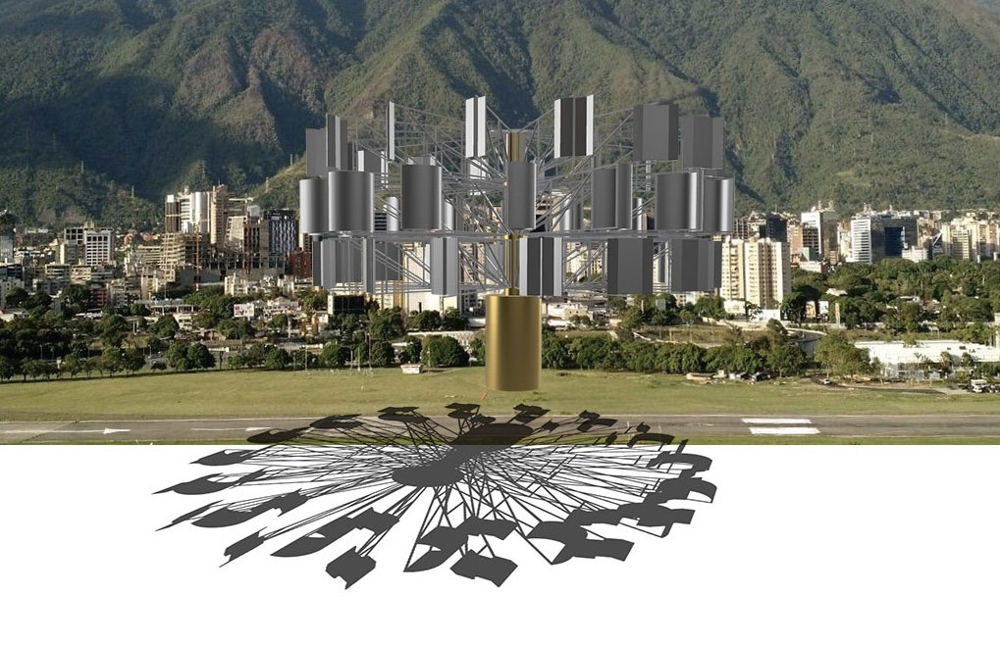
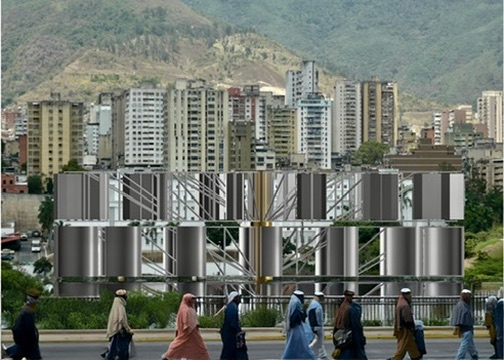

Ciber Escultura · 01 de 13 · IBM CADAM 1987
Alejandro Otero · Centro Científico IBM · Caracas
Creada en 1987 en el ciberespacio del Centro Científico de IBM de Venezuela. Existió solo en el espacio digital. Reconstruida en realidad aumentada y devuelta a Caracas — la ciudad donde nació.
Capa 01 · Archivo histórico
En 1987, Alejandro Otero y Ana Blanco crearon Aurea en el Centro Científico de IBM de Venezuela usando el sistema CADAM y la estación gráfica IBM 5080. Era un objeto virtual — intangible pero informativamente rico.
Cuando IBM apagó su mainframe 370 alrededor de 1992, la obra desapareció. Lo que quedó fueron estas fotografías.



Un cambio de soporte o un campo de trabajo distinto ... no representa un escollo mayor cuando tenemos básicamente entre las manos el sentimiento de lo que buscamos
Alejandro Otero · Saludo al Siglo XXI
Centro Científico IBM · Caracas · 1987
Capa 03 · Reconstrucción en realidad aumentada

Reconstrucción · 2025 3D · AR

La reconstrucción no es una simulación — es un objeto tridimensional real con volumen, materiales y sombras propias. Puedes verlo desde todos los ángulos y colocarlo en cualquier espacio mediante realidad aumentada.
En 1987 Aurea era luminosa y etérea, líneas de luz sobre negro total. Hoy el mismo objeto revela su arquitectura interna: la estructura radial, los cilindros dorados, las capas horizontales que el original apenas insinuaba.
En iPhone, toca el botón de AR y la obra aparece en tu espacio. En cualquier otro dispositivo, explora el modelo 3D en el navegador.
Capa 04 · Contexto propuesto


El contexto propuesto para Aurea es Caracas misma — la ciudad donde nació, el Ávila como testigo permanente, el cielo nocturno del valle. Una obra concebida en el ciberespacio que reclama su lugar en el espacio público que siempre fue su destino.
Capa 05 · Participación
Descarga la escultura, colócala en tu espacio con realidad aumentada — tu sala, tu ciudad, un desierto, el cosmos — fotografía o filma el resultado y compártelo.